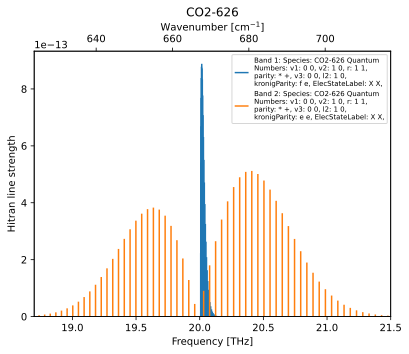

Arts catalogue data
These examples give an overview of the basic functionality of ARTS absorption catalogue data and how to use it in your own scripts.
Line strength
"""
This file will showcase how you can load line data from arts-cat-data
into the workspace and generate a plot of the line strengths.
"""
import os
import textwrap
import matplotlib.pyplot as plt
import numpy as np
import pyarts3 as pa
from pyarts3.arts.convert import freq2kaycm
# Download catalogs
pa.data.download()
# Initialize ARTS
ws = pa.Workspace()
# Isotopologue
isotopologue = "CO2-626"
# Print list of all available isotopologues:
# print(pa.arts.globals.all_isotopologues())
# Frequency range
f_min = 18.7e12
f_max = 21.5e12
# Reference temperature for line strength
T0 = 296
# Plot these bands
plot_bands_indices = range(0, 2) # First two bands
# Print lines of this band
output_lines_for_bands_indices = [1] # Second band
# output_lines_for_bands_indices = None # Skip line output
# Helper function to calculate the HITRAN equivalent line strength
def calc_hitran_line_strengths(lines, isotopologue, T0):
return [line.hitran_s(isotopologue, T0=T0) for line in lines]
# Load line catalog
ws.absorption_speciesSet(species=[isotopologue])
ws.absorption_bandsReadSpeciesSplitCatalog(basename="lines/")
# Throw away lines outside the frequency range
ws.absorption_bandsSelectFrequencyByLine(fmin=f_min, fmax=f_max)
# Bail out if no lines were found inside the frequency range
if len(ws.absorption_bands) == 0:
raise RuntimeError("No lines found in frequency range")
# Get the intensity of the strongest line in each band
max_strengths = [
np.max(calc_hitran_line_strengths(b.lines, isotopologue, T0))
for b in ws.absorption_bands.values()
]
# Sort bands by descending maximum line strength
indices = np.argsort(max_strengths)[::-1]
keys = list(ws.absorption_bands.keys())
sorted_bands = {keys[i]: ws.absorption_bands[keys[i]] for i in indices}
# Enumerate bands
enum_bands = list(enumerate(sorted_bands.items()))
# Bands to plot
plot_bands = [enum_bands[i] for i in plot_bands_indices]
# Print line information
if output_lines_for_bands_indices:
output_band_lines = [enum_bands[i] for i in output_lines_for_bands_indices]
for i, (qi, band) in output_band_lines:
# Print line information
strengths = calc_hitran_line_strengths(band.lines, isotopologue, T0)
for j, (line, strength) in enumerate(zip(band.lines, strengths)):
line_info = f"{line:h}".split(";")
strength = f"Line strength: {strength:.4g}"
wavenumber = f", {freq2kaycm(line.f0):.1f} cm^-1"
print(
f"Line {j + 1} in Band {i + 1}: ".ljust(25)
+ f"{(line_info[0] + wavenumber).ljust(40)} "
f"{strength.ljust(25)} {line_info[-2]}"
)
print()
# Print info about all plotted bands
for i, (qi, band) in plot_bands:
# Line center frequencies
print(f"Band {i + 1}:", "\n ".join(textwrap.wrap(f"{qi:h}", width=80)))
print()
# Plot
fig, ax = plt.subplots()
# Plot the two bands with the highest line strengths
for i, (qi, band) in plot_bands:
band_name = f"Band {i + 1}"
# Line center frequencies
pos = np.array([line.f0 for line in band.lines])
strengths = calc_hitran_line_strengths(band.lines, isotopologue, T0)
color = ax._get_lines.get_next_color()
ax.vlines(
pos / 1e12,
0,
strengths,
color=color,
label="\n".join(textwrap.wrap(f"{band_name}: {qi:h}", width=40)),
)
ax.legend(fontsize="x-small")
ax.set_xlim(left=f_min / 1e12, right=f_max / 1e12)
ax.set_xlabel("Frequency [THz]")
ax_wn = ax.twiny()
ax_wn.set_xlim(freq2kaycm(f_min), freq2kaycm(f_max))
ax_wn.set_xlabel("Wavenumber [cm$^{-1}$]")
ax.set_ylabel("Hitran line strength")
ax.set_title(isotopologue)
ax.set_ylim(bottom=0)
if "ARTS_HEADLESS" not in os.environ:
plt.show()
(Source code, svg, pdf)
{kind=link}
